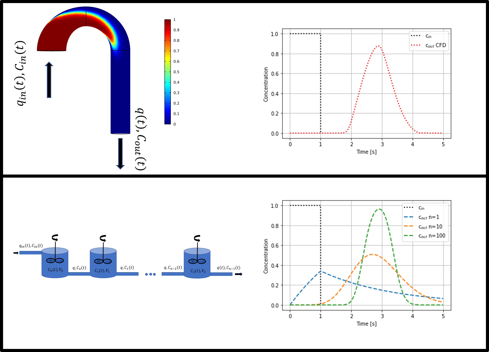
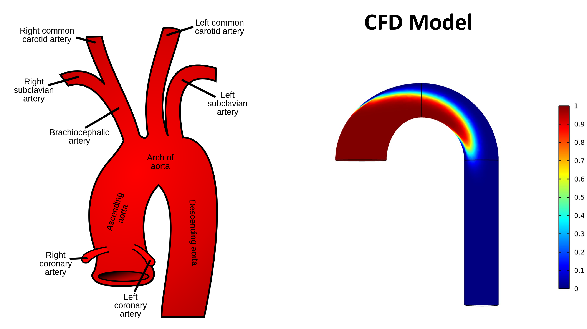
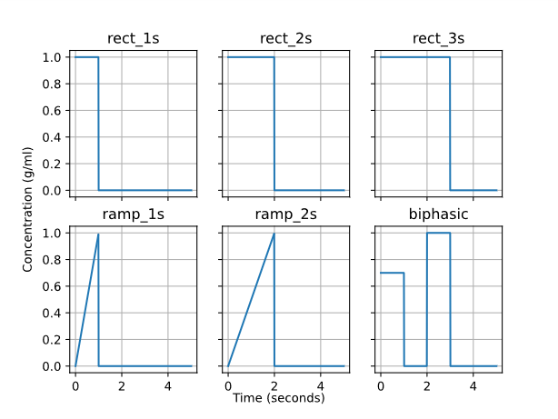
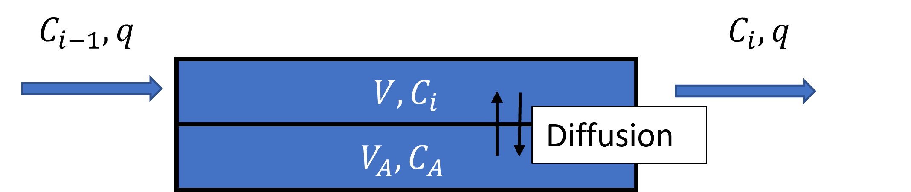

Stirred (not shaken)
Oct 18, 2023
Learning objectives. By completing this project, the student will:
- Implement an ODE solver using the Euler, Runge-Kutta (second and fourth order) algorithm
- Use mixing tank models to model how the shape of a medical tracer changes after traveling in an aorta arch
- Compare the ODE model to CFD simulation results and extract information about the cardiac output (flooding rate) and volume of the aortic arch
- Investigate if one can use the tracer signal to identify if there is a an aneurysm in the aorta
Graphical Abstract.
In this project we are investigating if we can replace a complicated 3D computational fluid dynamics simulation with a set of ordinary differential equations, as in figure 1.
Figure 1: Top: A CFD simulation of an aorta arch. Bottom: A model with \( n \)-mixing tanks in a series.

Motivation
It can be very difficult to model a real world system. First and foremost this is because crucial information about the system is missing, not because any fundamental physical laws are incomplete. We know the physical laws that govern each part of the system, but the system as a whole may be very complicated due to having many interacting parts.
As a concrete example, consider the circulatory system of the human body. If we want to model how blood flows inside a single blood vessel, it can be done reasonably well with the Navier Stokes equations, which arise from combining Newton's second law with conservation equations (i.e., continuity equations), for a derivation see e.g. the Feynman lectures. The Navier-Stokes equations are implemented in Computational Fluid Dynamics (CFD) solvers [1]. Several CFD solvers can be downloaded freely from the web and run on your personal computer, e.g., OpenFoam [2]. However, if you try to simulate all of the blood vessels in a human body (a total length of about 100 000 km, the problem becomes overwhelming. Furthermore, no human is alike, implying that even if we were able to map all the veins for a single person, the model would still not be directly applicable to others.
The same situation applies to subsurface flow. If we zoom in on the local flow between the mineral grains, we can solve the Navier-Stokes equations easily for a couple of hundred pores, as can be seen in figure 2 [3].
Figure 2: (left) A FIB-SEM image of chalk, (right) simulated flow lines inside the rock.

However, the length of one pore is typically only 1 \( \mu m=10^{-6} m \). Taking into account that an oil reservoir can be 100 m thick and extend for several km in each direction, it is simply impossible to simulate the fluid flow between all pores at this fine resolution. Even if we could, we lack crucial information about the geometric distribution of the grains. Since reservoirs are buried under ground, this information is practically impossible to get hold of.
The main point is that even if we know all the physical laws which are important for a problem, and we have written down a mathematical formulation of the problem, it can be impossible to solve them on the scale we are interested in. What to do then? We have to rely on effective models, that is, models which describe the relevant physics at a higher level, but which are still useful. By useful, we mean:
- The model must be mathematical tractable: The formulation must be such that we can solve the model numerically in a realistic amount of time.
- The model must be able to describe experimental findings and predict the outcome of experiments which have not been conducted yet.
- The model should contain few parameters. Too many parameters can lead to overfitting, in the words of John von Neumann: "with four parameters I can fit an elephant, and with five I can make him wiggle his trunk." [4] (p.297)
Theory
In this project, a CFD solver has been used to produce data for us: The CFD solver is our ''experimental lab''. To match results from the CFD simulations, we are going to implement a much simpler approach, namely a Continuous-Stirred-Tank-Reactor (CSTR) model with \( n \) tanks in series [ch.18][5]. The key idea we are going explore is illustrated in figure 1.
The top part of figure 1 illustrates what happens when a square pulse of contrast agent is injected into an aorta arch. The left plot shows a snapshot of the spatial distribution of contrast agent after 1 second, while the right plot shows the sampled effluent concentration (the concentration coming out) as a function of time. We want to investigate whether we can use a simple model with \( n \)-tanks in a series to predict the same effluent concentrations. Clearly, we will not be able to match the concentration inside the aorta arch. However, if we can reproduce the effluent concentration with the \( n \)-tank model (the value of \( n \) has to be determined from the data), we can use the simple model to determine important parameters of the system, such as the volume of the aorta arch. Subsequently, the model could become an important diagnostic tool.
The mathematical equations for \( n \)-tanks in a series follows from mass
conservation ([change of mass in the system]/time = [mass in]/time - [mass out]/time)
In the above set of ODEs, \( V_i \) is the volume of tank number \( i \), \( C_i=C_i(t) \) is the concentration in the tank at time \( t \) (unit mass/volume), \( q \) is a constant volumetric injection flow rate (cardiac output and unit volume/time), and \( C_{in}=C_{in}(t) \) is the injected concentration at time \( t \).
In this project, we want to use \( n \) as a parameter without changing the total volume of the system, thus we want the \( n=1 \) system to have the same volume as, e.g., \( n=10 \). We therefore need to scale the volumes of the individual tanks. To simplify, we shall assume that each tank has the same volume \( V \), hence the total volume is \( V_{Tot}=V_0+V_1+\cdots+V_{n-1}=nV \) which leads to \( V=V_{Tot}/n \).
We can now rewrite the mass conservation equations as
$$ \begin{align} \frac{dC_0}{dt} &=\frac{n}{\tau}\left(C_{in}-C_0\right)\,\no \tag{5}\\ \frac{dC_1}{dt} &=\frac{n}{\tau}\left(C_0-C_1\right)\,\no \tag{6}\\ & \vdots \no \tag{7}\\ \frac{dC_{n-1}}{dt} &=\frac{n}{\tau}\left(C_{n-2}-C_{n-1}\right), \tag{8} \end{align} $$where \( \tau\equiv V_{Tot}/q \). Note that \( \tau \) has units of time. To help in later exercises, the analytical solution for \( n=1,2,3 \) in a special case is given below
When only the first tank contains a tracer concentration and we do not inject a tracer \( C_{inj}(t)=0 \), the solutions to equation (8) for \( n=1,2,3 \) is (see e.g. section 7.5 of [6])
$$ \begin{align} C_0(t) &= \exp{\left(-\frac{t}{\tau}\right)} \no \,. \tag{9}\\ C_1(t) &= \frac{2t}{\tau} \exp{\left(-\frac{2t}{\tau}\right)}\no \,. \tag{10}\\ C_2(t) &= \frac{9t^2}{2\tau^2} \exp{\left(-\frac{3t}{\tau}\right)} \,. \tag{11} \end{align} $$Exercise 1: Write your own ODE solver
Part 1. Implement an ODE solver, that solves an arbitrary (initial value) system of ODEs of the form
$$ \begin{equation} \tag{12} \frac{d\vec{y}}{dt}=\vec{f}(\vec{y},t)\,, \end{equation} $$where the solution \( \vec{y} \) may be a vector. Since the equation system is completely generic, the solver has to take in as argument the function that computes the right hand side-vector; that is, you are not allowed to hard-code in a specific model. In addition, the solver needs to know the starting time, \( t_0 \), the corresponding initial condition(s) \( \vec{f}(\vec{y},t) \), as well as the final simulation time, \( t_f \).
The user should be able to choose between the following methods:
- Eulers method
- Runge-Kutta second order (RK2)
- Runge-Kutta fourth order (RK4)
Tip: It can be a good idea to encapsulate your solver inside a custom class, and to implement one class function for each method.
Part 2.
- Test you implementation against the analytical solutions in equation (11) for \( n=1,2 \) and 3.
- for \( n=1 \) use \( \tau=2 \), \( C_0(0)=1 \)
- for \( n=2 \) use \( \tau=2 \), \( C_0(0)=1 \), \( C_1(0)=0 \)
- for \( n=3 \) use \( \tau=2 \), \( C_0(0)=1 \), \( C_1(0)=C_2(0)=0 \)
Part 3. Pick $n=$1, 2, or 3
- plot the numerical error at \( t=1 \), for the last tank, and for \( dt \) values in the range \( 0.1,\ldots 0.001 \). (You may try lower values if you have a very fast solver)
- does the numerical error scale as expected for Euler, RK2, and RK4?
Exercise 2: Fit CSTR model to CFD model: Healthy aorta
Since we do not have experimental data available, we will use CFD simulations of an aorta arch, see figure 3 for an illustration.
Figure 3: (Left) Illustration of an actual aorta arch, (Right) corresponding CFD model.

In figure 4 we have injected different concentration profiles, and in the data folder you will find the outlet concentration profiles (averaged over the outlet). The file Healthy_rect_1s.csv corresponds to injection protocol rect_1s etc. Similarly for the aorta with an aneurysm, shown to the bottom in figure 4, the corresponding data files are Aneurysm_rect_1s.csv etc.
- In all the simulations the same injection rate \( q \) is used
Can we learn something about the aorta arch using only knowledge about the tracer signal? Is it possible to identify e.g if the aorta arch contain an aneurysm by only observing the tracer signal out of the aorta?
In a typical medical application we would only know how much mass of a tracer we inject, and not the flow rate. For the rect_1s case, 83.33 grams of tracer is injected. The flow rate (cardiac output) can be found as follows. Firstly, we write down mass conservation for the whole aorta arch
Note that we have not used the CSTR approximation and put \( C_{out}(t)=C(t) \). Multiplying the above equation with \( dt \) and integrating from zero to \( \infty \), we get
$$ \begin{equation} V\int_0^\infty dC=q\int_0^\infty\left[C_{in}(t)-C_{out}(t)\right]dt. \tag{14} \end{equation} $$The injected mass is \( M_{inj}=q\int_0^\infty C_{in}(t)dt \), \( C(0)=C(\infty)=0 \) (i.e. no tracer initially and no tracer when \( t=\infty \)), thus we arrive at the Steward-Hamilton equation [7]:
$$ \begin{equation} q=\frac{M_{inj}}{\int_0^\infty C_{out}(t)dt}. \tag{15} \end{equation} $$Part 1.
- Use \( M_{inj}=83.333 \) gram, equation (15) and the data in
Healthy_rect_1s.csvto show that \( q= \) 5 L/min.
Part 2.
- Make Python functions that reproduces at least three other injection protocol than
rect_1s(i.e. minimum four in total) from figure 5, as an inspiration you can use the code below for therect_1s
def c_inj(t,ti=np.array([0,1.,1.,2.,2.]),qi=np.array([0,0,0,0,0]),ci=np.array([1,1,0,0,0])):
return np.interp(t,ti,ci),np.interp(t,ti,qi)
alternatively one can do
def c_inj(t):
if t < 1:
return 1.
else:
return 0.
and similarly for the other protocols you choose.
Part 3.
- For the 1s rectangular pulse injection protocol, tune \( \tau=V_{tot}/q \) and the number of compartments to match the data for the healthy patient (
Healthy_rect_1s.csv) . - Make a figure where you show your "best match". Use scatter points for the data, and solid lines for your simulation.
- "Best match" of \( V_{Tot} \) can be done by one of the following methods, there will be an increasing number of points given if you choose the most difficult method
- (easy) manually adjust \( V \) to match data
- (moderate) use scipy.optimize.curve_fit to find \( V \)
- (hard) In the course we have covered several algorithms that are useful for finding roots and/or minima of functions, e.g., fixed point iteration, Newton's Raphson's method, the bisection method, the secant method, and gradient descent. Implement one of these methods, and use it to find the \( \tau \)-value that minimizes SSR (see Appendix: Least square optimization). Hint: Depending on the method(s) you choose, you may have to implement a Python function to calculate the second derivative of \( C_2 \) with respect to \( \tau \).
Figure 4: Schematic of the geometries used in the CFD simulations. Top: A healthy aorta. Bottom: An aorta with an aneurysm.

Figure 5: The different injection protocols used for the CFD simulations.

Part 4.
It is important that you do not change \( n \) or \( V_{Tot} \) in this part. Here we have used the rect_1s to tune the model and now we test how good it is by predicting other injection protocols.
- Choose at least three other injection protocol than
rect_1sfrom figure 5, use the model you ended up with in part 3 to predict what will happen. - Illustrate your forecasts with one or more figures where you compare model to data.
- Discuss your findings.
Exercise 3: Fit CSTR model to CFD model: Aorta with aneurysm
Part 1.
- Repeat exercise 2, part 3 for the case of the unhealthy patient with an aneurysm. Note: you have to find new values for \( n \) and \( V_{Tot} \).
The relevant data is found in the text file Aneurysm_rect_1s.csv.
Part 2.
- Similarly, repeat exercise 2, part 4 for the case with an aneurysm.
Part 3.
- Compare the number of compartments you ended up with in the two cases (healthy vs. aneurysm). Was it very different, why / why not?
Part 4.
- Discuss strengths and weaknesses of the CSTR approach. What have you learned from this exercise?
Exercise 4 (OPTIONAL): Extend model
Note: You can still get 100 \( \% \) on the project if you skip this exercise, but you will get additional points if you do it (or parts of it).
For the aorta with aneurysm there is a diffusive exchange with the aneurysm. Thus a model of the type in figure 6, might improve the match. \( V_A \) is the volume of the aneurysm, and \( D \) models the exchange rate between the main flow and the aneurysm.
Figure 6: Exchange between the (main) aorta arch and aneurysm.

Now, we have introduced two additional parameters \( V_A \) and \( D \). \( D \) acts as an effective diffusion constant, and it is reasonable to put it proportional to the flooding rate (higher flooding rate more convective mixing), as a first guess you might put it
$$ \begin{equation} D=10\cdot q. \tag{18} \end{equation} $$Part 1.
Add equation (17) to your \( n \) compartment model, at a specific position towards the outlet.
- Are you able to match the
Aneurysmdata better now? - What is the optimal values for \( D \), and \( V_A \)?
Appendix: Least square optimization
Finding "optimal" parameter values will in the following be based on the method of least squares. Specifically, the objective function we want to minimize is the sum of squared residuals,
$$ \begin{align} \tag{19} \text{SSR} = \sum_{i=0}^{N_d-1}r_i^2=\sum_{i=0}^{N_d-1}(d_i-m_i)^2\,, \end{align} $$where \( N_d \) is the number of data points, \( d_i \) is the \( i \)-th data point, and \( m_i \) is the corresponding model prediction. In this specific case, we are interested in the concentration in the last tank and the unknown we wish to tune to the data is \( \tau=V_{tot}/q \), hence we have \( m_i=C_{N-1}(t_i;\tau) \), and thus the derivative of the objective function is
$$ \begin{align} \tag{20} \frac{d\text{SSR}}{d\tau}&=2\sum_{i=0}^{N-1}r_i\frac{dr_i}{d\tau} = -2\sum_{i=0}^{N-1}(d_i-C_{N-1}(t_i;\tau))\frac{dC_{N-1}(t_i;\tau)}{d\tau}\,. \end{align} $$The optimal parameter value for \( \tau \) is the value for which the least square estimate (objective function) has a global minimum point, and at such a minimum, the derivative of the least square estimate is zero.
In the project it is helpful to
- Write a Python function that calculates SSR as a function of \( \tau \).
- Write another Python function that calculates the derivative of SSR with respect to \( \tau \).
To do this, you could implement a function that calculates equation (19) as a function of \( \tau \), then calculate the derivative of equation (19) numerically
$$ \begin{equation} \frac{dSSR}{d\tau}=\frac{SSR(\tau+\Delta \tau)-SSR(\tau)}{\Delta \tau}. \label{} \end{equation} $$Alternatively, which is numerically faster, but (maybe) a little more work to implement: Run the ODE solver for one value of \( \tau \) and one value of \( \tau + \Delta \tau \), and calculate the derivative numerically
$$ \begin{equation} \frac{dC_{N-1}}{d\tau}=\frac{C_{N-1}(t,\tau+\Delta \tau)-C_{N-1}(t,\tau)}{\Delta \tau}, \label{} \end{equation} $$and insert into equation (20) to calculate the derivative SSR.
Guidelines for project submission
You should bear the following points in mind when working on the project:
- Write the name of all persons working in the group at the top of the notebook.
- The final project report must start with an abstract, the abstract is a self contained summary of the project and should contain quantitative statements.
- Start your notebook by providing a short introduction in which you outline the nature of the problem(s) to be investigated.
- End your notebook with a brief summary of what you feel you learned from the project (if anything). Also, if you have any general comments or suggestions for what could be improved in future assignments, this is the place to do it.
- All code that you make use of should be present in the notebook, and it should ideally execute without any errors (especially run-time errors). If you are not able to fix everything before the deadline, you should give your best understanding of what is not working, and how you might go about fixing it.
- Avoid duplicating code! If you find yourself copying and pasting a lot of code, it is a strong indication that you should define reuseable functions and/or classes.
- If you use an algorithm that is not fully described in the assignment text, you should try to explain it in your own words. This also applies if the method is described elsewhere in the course material.
- In some cases it may suffice to explain your work via comments in the code itself, but other times you might want to include a more elaborate explanation in terms of, e.g., mathematics and/or pseudocode.
- In general, it is a good habit to comment your code (though it can be overdone).
- When working with approximate solutions to equations, it is very useful to check your results against known exact (analytical) solutions, should they be available.
- It is also a good test of a model implementation to study what happens at known 'edge cases'.
- Any figures you include should be easily understandable. You should label axes appropriately, and depending on the problem, include other legends etc. Also, you should discuss your figures in the main text.
- It is always good if you can reflect a little bit around why you see what you see.
Bibliography
- J. D. Anderson and J. Wendt. Computational Fluid Dynamics, Springer, 1995.
- C. Greenshields. OpenFOAM V10 User Guide, The OpenFOAM Foundation, 2022, https://doc.cfd.direct/openfoam/user-guide-v10.
- J. Vinningland, E. Jettestuen, O. Aursjo, M. Madland and A. Hiorth. Mineral Dissolution and Precipitation Rate Laws Predicted From Reactive Pore Scale Simulations, IOR 2017-19th European Symposium on Improved Oil Recovery, 2017.
- F. Dyson et al.. A Meeting With Enrico Fermi, Nature, 427(6972), pp. 297-297, 2004.
- H. S. Fogler and S. H. Fogler. Elements of Chemical Reaction Engineering, 5 edition, Pearson Educacion, 2020.
- A. Hiorth. Modeling and Computational Engineering, https://github.com/ahiorth/CompEngineering, 2022.
- A. H. Mahnken, E. Klotz, A. Hennemuth, B. Jung, R. Koos, J. E. Wildberger and R. W. G\"unther. Measurement of Cardiac Output From a Test-Bolus Injection in Multislice Computed Tomography, European radiology, 13(11), pp. 2498-2504, 2003.